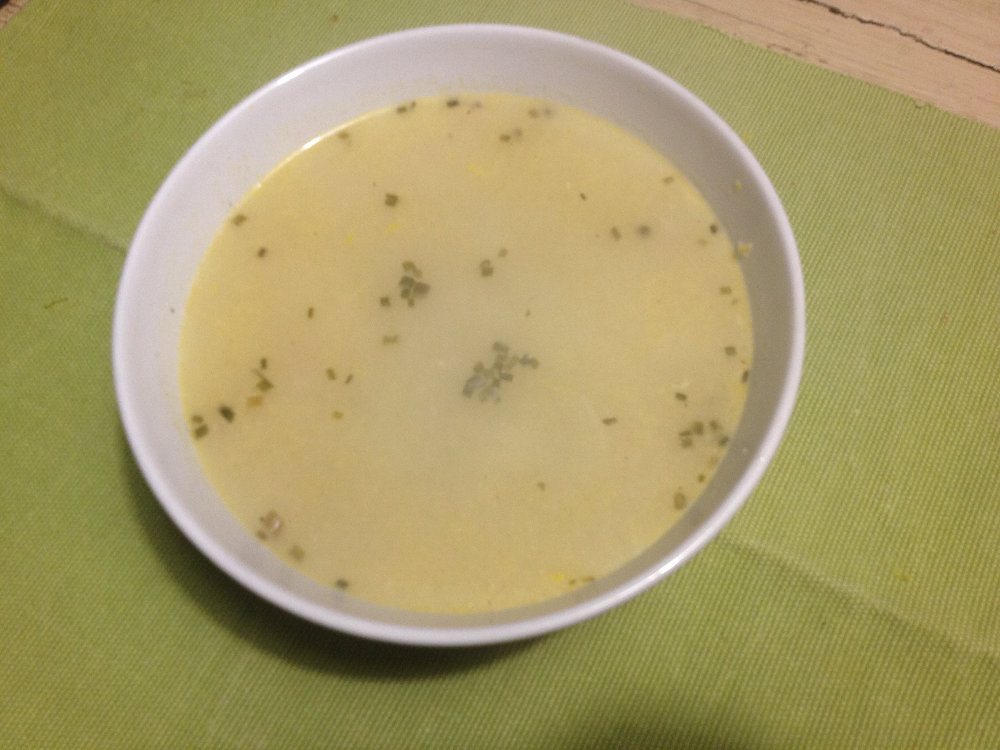
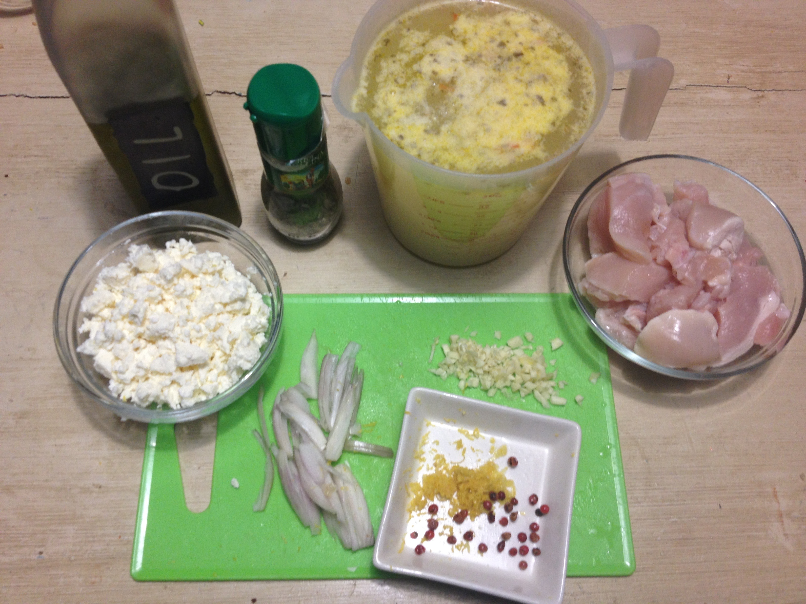
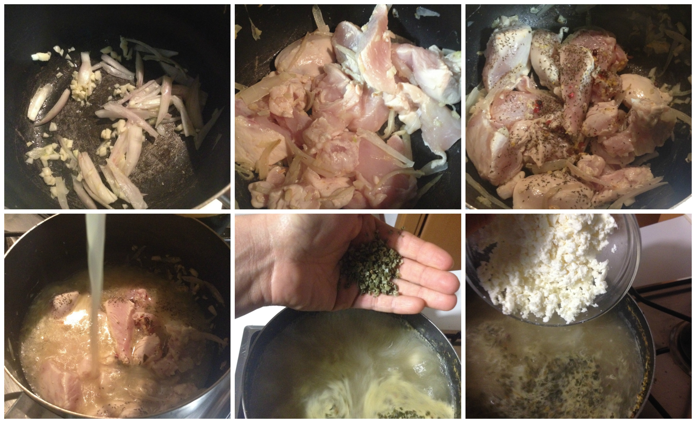
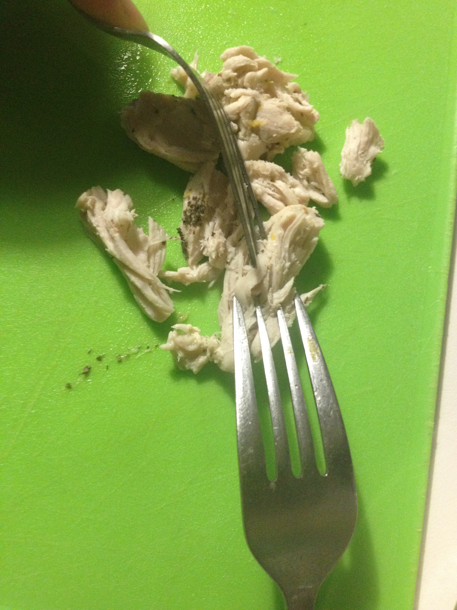

Greek chicken and feta soup¶

- Serves: 4
- Type: starter - main
Background¶
It is winter here and outside the temperature is close to zero degrees. I was tired of the usual chicken soup and I wanted to try a new recipe that a friend recommended to me. It is simple, it does have just a few ingredients and it is really tasty and fresh.
Ingredients¶
2 garlic cloves, diced
1 shallot, sliced
1 chicken breast, diced
4 cups chicken stock
200 grams crumbled greek feta cheese
1/2 teaspoon crushed red pepper
1 teaspoon dried mint
salt and pepper to taste
zest of 1 lemon
2 tablespoon chopped green onion (chives)
olive oil
Ingredients
Steps¶
Steps
Heat oil in a pot, sauté the sliced shallot and diced garlic cloves for a few minutes, being careful to do not brown them.
Add the diced chicken, the lemon zest, mint and crushed red pepper. Mix.
Pour the chicken stock. Cover with a lid the pot and raise the temperature to high heat and bring to boil.
Once it is boiling reduce the temperature to medium, boil for 5 - 10 minutes (just to be sure that the chicken is properly cooked).
Simmer it for another 5 minutes
If you want you can shred the chicken breast with the help of tongs or forks outside the pot and them place it back in the pot.
Shredding the chicken
Add the feta cheese and stir and the chopped green onion.
Taste the salt and pepper and if it is necessary add some.
Serve warm and enjoy!.